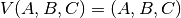
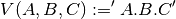
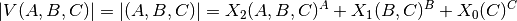
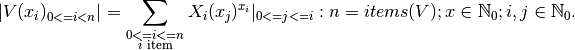

7.1. Hirarchical Bit Masks for Numeric Vectors¶
In programming languages the hierarchical information is typically represented as an ordered vector with hierrachical semantics of items defined by their position. This is in general a very common representation for naturally hierarchical information as for paths in filesystems, but also for example for version numbers combined by multiple major and minor subnumbers as the Python version itself.
In case of the combined version number the common hierarchical numeric values constitute a vector of a logical number assembled with a series of independent numbers based on a set of ordered heterogeneous virtual radix values. The following version
(1)¶
is commonly expressed also by the string
(2)¶
The resulting vector requires in programming languages a number of comparison operations for logical processing, and the combination into one overall result with eventual additional processing for semantical slices. This increases linear with the incremental number of required processing, and could sumup considerably in larger loops. It could result in an overall exponential performance degradation when applied in non-linear algorithms.
The platformids package provides a tiny core library with integer enumerations to be commonly used in order to enhance the performance. Thus the provided library is designed for minimized overall performance degradation for non-matching cases when generally applied. The overall performance enhancement should be present after the 2nd. or 3rd. processing of the integer replacement value, while the static one-time calculation of the enum value is normally negligble impact due to the single-shot static calculation.
7.1.1. Scalar Representation of Hierarchical Integer Vectors¶
The required operations on hierarchical integer vectors is in a number of cases the static comparison of ranges of selected single and combined items. The following simple comparison of two static integer vectors example:
results actually in the logical hierarchical item comparison:
Because these could be fragmented over code parts of local scopes and across multiple functions and threads, the optimization by a compiler could be tricky or prove to be impossible.
The reference values to be processed by comparison including the variable value are frequently static for the lifetime of the processing systems process or the scope of the relevant code, while the results of these comparison operations are applied as a selection criteria for distinguished code segments. This is in particular the case for version vectors in order to control adaption of variants of code segments for compatibility reasons. In this scenario and under specific conditions the values of the array could be encrypted into a single compressed numeric value defined by a specific layout of the undelying bit mask.
In the following principle scheme four values of 4-bit wide integers are combined into one numeric value.

{kind=link}
by this compression the comparison operation
could be written now as
or in decimal representation
The advance is given in particular for repetitive application, e.g.
The bit mask encoding is in particular applicable for vectors of small integers with a combined semantical hierarchy.
7.1.2. Python Performance on Scalar Integers Bitmasks¶
The Python implementation maps the data type of integer onto it’s internal representation. This type is processed and mapped onto platform types under the aspect of processing ranges and performance optimization.
The mapping of the internal representation onto one or more platform data types of the underlying “C” implementation defines finally the dominant execution performance at least in case of loops. The mapping has changed for Python3 to infinite value representation, while ist has range optimization for Python2 based on the maxint of the platform - 32/bit or 64/bit. Thus Python2 processes integer values smaller than maxint significantly faster than Python3 - see [PYINTPERF2VS3A] and [PYINTPERF2VS3B].
The platformids therefore maps the distribution information to a scalar integer as bitmask vector of 32-bit width, the python release to a scalar bitmask vector of 16-bit width.
7.1.3. Operations on Hierachical Bit Masks¶
The integer representation of combined values of hierarchical bit masks simulates a numeric system of variable indexes.
The combined bit masks define a vector representation, where each item is virtually a logical superscript of the dynamic radix defined by the righthand vector items. Each resulting radix value is based on it’s location in the vector, the sum of the bit-mask widths of the right-hand side items, and in case of an eventual overflow also on the item itself.
(3)¶
The represented numeric value could be expressed as a general equotation for the defined adaptive polynominal of fixed size bit masks:
(4)¶
The resulting numeric value is defined by the sum of each value of the vector items once these are moved to their coreesponding bit position via a shift operation. E.g.:
The corresponding fixed segment of each vector item is defined as it’s shifted bit mask at the final segment-position. The concatenated bit-representations of the integer value of each item found the resulting integer value.
The resulting combined value enables literal comparison operations, but in case of a present hierarchy operations related to the numerical order of the contained bit masks.
The gain of performance is at least proportional to the number of calls with a little initial overhead for a few increments only. The resulting gain may even benefit exponentially for short bit masks compared to the raw processing of the items.
This assembly of the resulting representation suits particularly for mathematical single-shot operations of literal match and threshold passing calculations.
7.1.4. Bit Mask Ranges¶
Python can handle basically bit masks of arbitrary length, in particular in combination with the standard library decimal. The maximum gain of performance is given in particular for sizes of overall bit masks fitting completely into CPU registers. Thus modern CPUs on commercial machines of up to 64bit get the most benefit. The advance in case of GPU based processing with wider vectors could be even better when thoroughly desined. Overall values with larger resulting bit-widths on commercial CPUs will still benefit largely, when these consist of a larger number of short-fragmented items with small or moderate individual number ranges. Here libraries such as decimal provide additional enhancements.
See also section Python Performance on Scalar Integers Bitmasks.
7.1.5. Applications of Bit Mask Encryption¶
The bit-mask operations provide a simple means for the efficient repetitive bulk-processing of static numerical threshold dependencies of numeric vectors. Prominents applications are
Bit Masks for OS Type and Distribution of System Platforms
The platform dependecy on the operating system, the packaged distribution are for system development frequently to be checked repetitive. Thus the bit mask encryption is a simple means of performance enhancement.
Bit Masks for Machine Platforms
The base layer of a virtual or physical machine are for system development frequently to be checked repetitive.
See [machineids].
Bit Masks for Python Releases
The Python release itself is here is a quite good example and actually the originator for this package.
See [pythonids].
Bit Masks for Python Extensions
The most of the Python interpreters and compilers provide extension modules for the implementation of native high-performance applications. These could be commonly supplied either as compiled C/C++ modules e.g. for CPython and PyPy, or e.g. as Java extensions for Jython, or IronPython with C# on .NET and mono platforms.
Another approach is here for the C/C++ based extensions is the application of Cython or it’s predecessor PyRex, which provide compiler for extended native Python. Other integration frameworks for extensions include ctypes, CFFI, and SWIG.
See [extensionids].